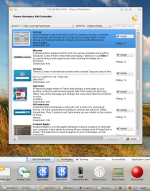
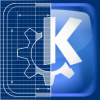

KDE is worldwide community of hackers, artists, and contributors that develops and distributes a modern, full-featured graphical desktop environment. The desktop is fast, easy-to-use, powerful, and beautiful. All software produced by KDE is free (as in freedom).
The KDE software actually consists of the KDE Plasma Workspaces, which is the desktop environment, and the KDE Software Collection, which is the accompanying suit of applications.
The Plasma desktop offers a smooth user experience, which is capable of utilizing 3D acceleration, and a number of unique productivity features that enrich and, at the same time, streamline user interaction with the desktop environment. There’s eye-candy for those who want it and serious features for those who need them.
The desktop and its applications are also highly customizable. Unlike some other, undeniably wonderful, desktop environments, KDE Plasma does not shy away from giving the user the opportunity to tweak and theme the desktop to their heart’s content. It has a built-in desktop search function, which relies on an indexing engine with semantic capabilities.
The KDE collection of bundled applications, along with a wealth of well-integrated third-party apps, provides an incredible selection of quality software, which can be used for 
Amarok is a KDE music player and collection organizer. Not only can it play your music, it also shows lyrics and artist info, downloads cover art, tunes into Internet radios, manages podcasts, synchronizes collections with portable players, and much more. People have been heard to switch to Linux based on their experience with Amarok. It really rocks!
Krusader is a two-panel file manager with a ton of features. It can browse files, compressed archives, virtual filesystems, and remote filesystems. It supports transparent FTP, SSH, WebDAV, and just about anything you might think of. It can pack and unpack archives, batch-rename files, edit and compare text files, display images, verify checksums, split and combine files, synchronize directories, and more. It’s highly configurable, super-fast, and mildly addictive.
digiKam is an advanced digital photo management application. It can organize your collection of photos in albums and sort collections based on dates, tags, EXIF, and other meta-information. digiKam can import images directly from cameras and supports all RAW formats. It also works with a myriad of plugins that allow you to create HDRs, panoramas, slideshows or web albums. Export to online galleries is also possible. ShowFoto, a standalone application from the digiKam software collection, can be used for retouching photos – it can correct colors, hues, brightness, lens distortions, red eyes, and more.
KDE is also a handy development platform. It has a robust API and as such, it ships with a comprehensive set of libraries, which can be used to develop applications that take advantage of the KDE framework. Based on the acclaimed Qt toolkit, the KDE libraries deliver a great amount of C++ goodness. There are also bindings for a whole bunch of other programming languages, including Ruby, Python, and Perl.
KDE has been around since the 1990s and has gone through a lot of development. It was founded by Matthias Ettrich of Germany and has since been picked as the default desktop by a number of Linux distributions, including openSUSE, Mageia (the descendant of Mandriva and Mandrake Linux), Kubuntu, or Fedora’s KDE spin. It can be used on other *nix operating systems as well, and, beginning with version 4.0, KDE applications can run on MS Windows.
KDE’s mascot is Konqui, the friendly green dragon. Organizational and legal matters of the KDE community are handled by the KDE e.V. non-profit organization, which has many big-name sponsors, including Intel and Google. KDE Plasma is available in over 100 languages, and its development community forms the second largest free-software project after the Linux kernel. Sounds interesting? Get involved, become a contributor.
It’s been a long-running tradition to give KDE applications names that either start with or prominently feature the almighty letter “K”. Thus, we can encounter powerful, yet rather blandly named apps, such as KMail, KOrganizer, or KTorrent. There are, however, some bad-ass names, too. Consider Konqueror or Krusader. Let’s not dwell on the apparent naming misfires represented by KolourPaint, Akregator, or Okular :-)
{kind=link}
{kind=link}
{kind=link}